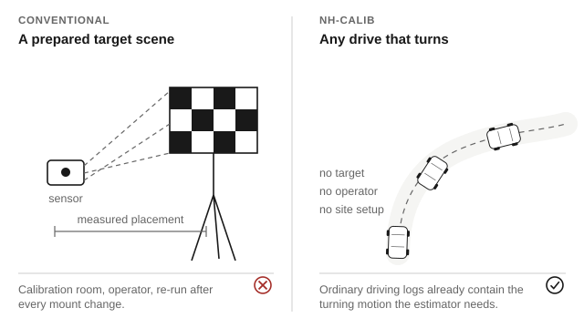
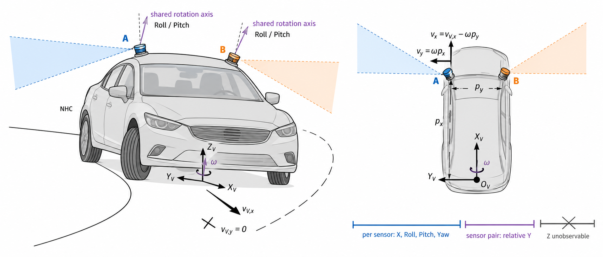
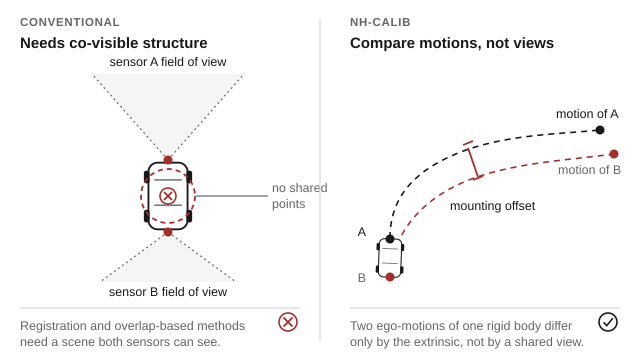
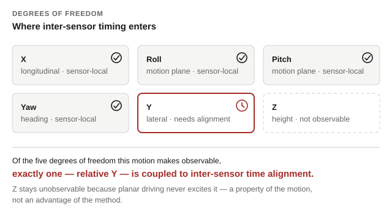
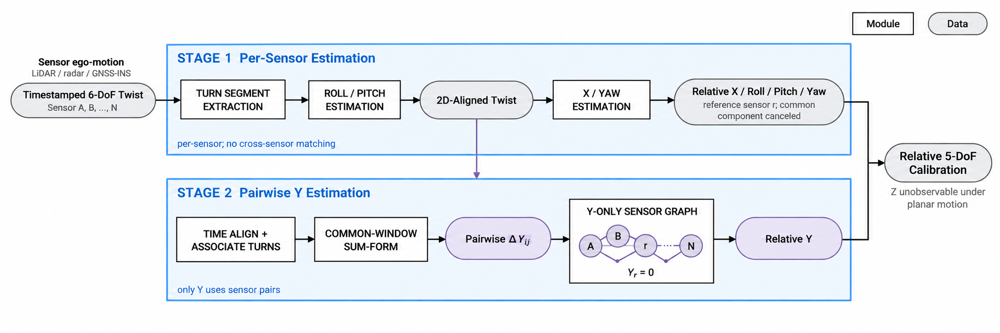
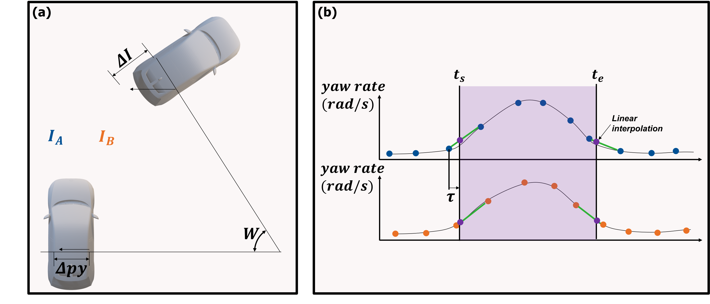
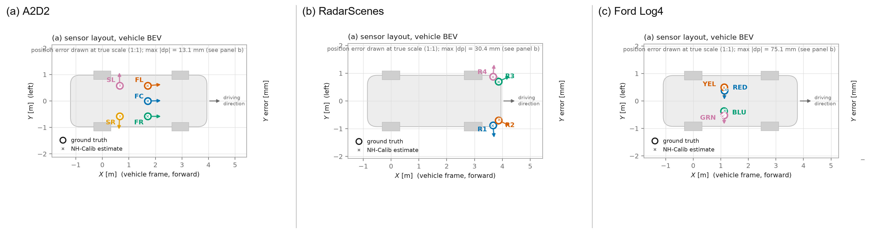
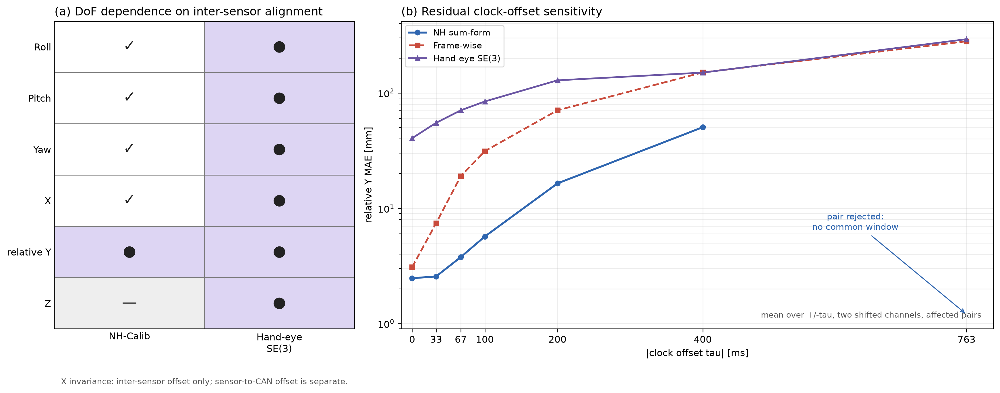

No target, no calibration site
Wheeled-vehicle motion is the reference. Any log containing ordinary turns carries the information the estimator needs, so a mount change costs a drive rather than a booked facility.

Research project · manuscript in preparation
Affiliations withheld during review

Sensors mounted on one vehicle rarely share a field of view or a modality, and mounts drift after maintenance. Three constraints decide whether a calibration method can run on such a platform at all.
| Approach | Runs without a target | Runs without shared field of view | Parameters coupled to inter-sensor time alignment |
|---|---|---|---|
| Target-based | ✗ prepared board or marker | ✗ target must be co-visible | — static capture |
| Registration / overlap | ✓ | ✗ needs co-visible structure | ● maps are built from timed motion |
| Hand–eye / trajectory | ✓ | ✓ | ✗ all six, through trajectory matching |
| NH-Calib | ✓ any turning drive | ✓ no common scene | ✓ one of five observable, relative Y only |
Columns state what a method requires of the platform, not its accuracy. Baseline accuracy under the same driving data is reported on the wiki results page.
Wheeled-vehicle motion is the reference. Any log containing ordinary turns carries the information the estimator needs, so a mount change costs a drive rather than a booked facility.

Sensors are related through the chassis they are bolted to, not through a scene they both observe. Front and rear LiDARs, or LiDAR against radar, are handled the same way.

X, roll, pitch and yaw come from each sensor’s own twist, so they never cross a clock boundary. Relative Y is the single parameter estimated across sensors, and the only one that inherits the alignment error. The observability and time-alignment pages give the derivation and the measured sensitivity.
Alignment stays a method-neutral preprocessing step: this counts how many parameters depend on it, and is not a claim of robustness to bad synchronization.

Extrinsic calibration is difficult when vehicle-mounted sensors do not share a field of view or sensing modality. NH-Calib uses metric ego-motion and wheeled-vehicle motion constraints to separate the calibration problem by observability. Each sensor independently estimates X, roll, pitch, and yaw from its own twist. Relative Y is recovered from associated turning segments using temporal alignment, common-window integration, and robust weighted least squares. The method is evaluated on LiDAR and radar configurations from A2D2, RadarScenes, and Ford Multi-AV; ground-truth extrinsics are used only for evaluation.
A common metric-twist interface admits LiDAR or radar odometry, GNSS/INS, and wheel-speed/IMU inputs. The estimator separates sensor-local parameters from the single parameter that requires cross-sensor association.


Relative errors are evaluated over valid ordered sensor pairs. Translation errors are reported in millimetres and rotation errors in degrees.
| Dataset | Pairs | X | Y | Yaw | Roll | Pitch |
|---|---|---|---|---|---|---|
| A2D2 | 20 | 10.90 mm | 2.85 mm | 0.098° | 0.191° | 0.112° |
| RadarScenes | 12 | 5.69 mm | 16.71 mm | 0.115° | — | — |
| Ford Log 4 | 12 | 45.37 mm | 31.29 mm | 0.203° | 0.479° | 2.075° |
Ford Logs 5 and 6 achieve relative-Y MAEs of 24.75 mm and 7.28 mm, respectively, showing the effect of motion coverage and the number of valid turning windows.
This table averages over valid ordered sensor pairs. The manuscript instead scores one final calibration per target sensor against a fixed reference; that reference-relative five-degree-of-freedom table, the hand-eye and registration baselines, and the ablations are given with their metric definitions and conditions in the algorithm wiki results page.


The archival citation, manuscript, and implementation will be released after publication.
@misc{nhcalib2027,
title = {NH-Calib: Self-Calibration of Sensor Extrinsics
under Wheeled-Mobility Motion Constraints},
author = {Anonymous},
year = {2027},
note = {Manuscript in preparation}
}